Building Ryce / By Raghav Sethi
A new screen.
A familiar spark.
Seeing iPhone Duo made me imagine a different Ryce. And somewhere along the way, app development became interesting all over again.
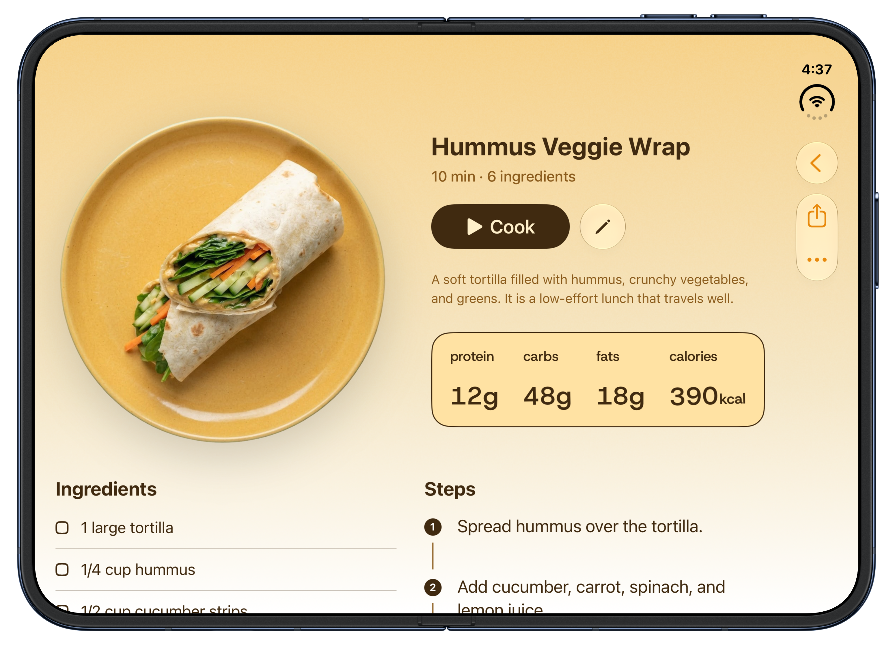
The first time I saw iPhone Duo, my eyes just sparkled.
I could already see Ryce on it. Before I had worked out any of the details, my mind was racing: what could meal planning feel like on that screen? What if your recipes could sit right beside your week? What if making a grocery list didn’t mean leaving the meals you were choosing from?
I kept thinking, Ryce would be perfect for this.
There’s a feeling I love about building apps: when an idea gets ahead of your hands and you want to open Xcode immediately. Duo brought that feeling back. Suddenly, app development was interesting again. There were so many possibilities I wanted to try.
A little more room for our everyday ritual
Ryce started with a very ordinary question my wife and I kept asking each other: what should we cook tonight? We had plenty of inspiration saved across links and videos. Turning it into an actual meal was the part we needed help with.
That is still what I want Ryce to do. Seeing a new device made me think about how much better that small, everyday ritual could feel.
I wanted opening Duo to feel like spreading things out on the kitchen table: your plan, your recipes, your shopping list. Everything close enough to make the next decision.

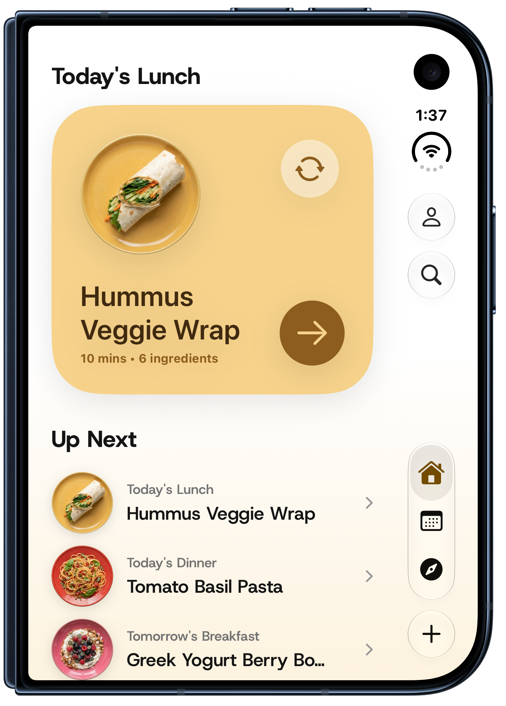

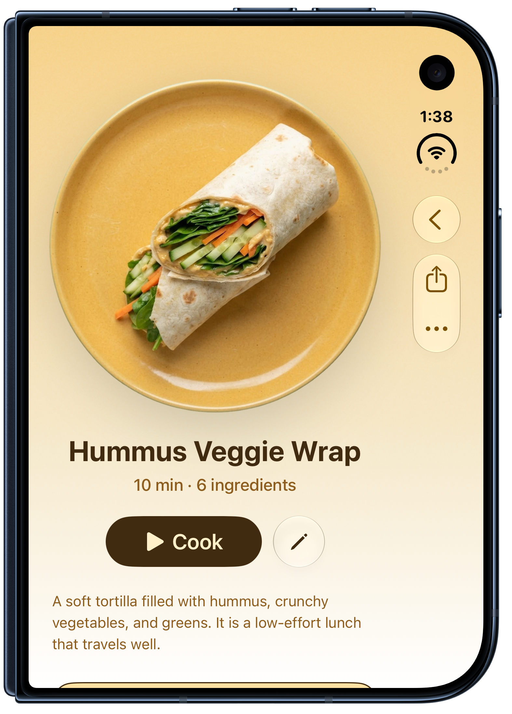
The week on one side.
The possibilities on the other.
Meal Plan was the first place where it really clicked for me.
My wife and I often sit down on Sunday to decide what we want to eat during the week. It’s a lot of little decisions: something quick for a busy day, a recipe we’ve been meaning to try, ingredients we can use across a few meals.
On Duo’s open display, I could finally give that process its own space. The plan stays on the left. On the right, I can look at the selected day, browse folders and find a recipe, while keeping the week in view.
Pick a recipe and it fills the meal slot. Or drag it straight across onto the plan. That little movement feels so natural here: this looks good; let’s have it on Thursday.
This was the part that made me smile. The form of the device had given me a reason to rethink a screen I already knew so well.
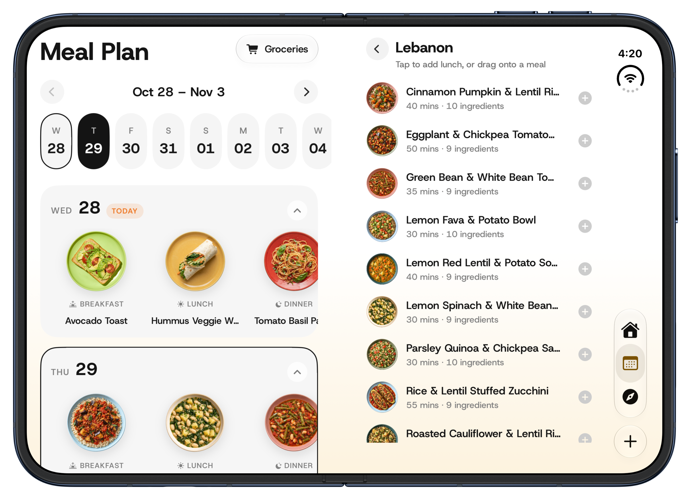
Groceries belong beside the meals.
Once Meal Plan had two panes, the grocery page felt like the obvious next step.
When I’m deciding what to buy, I want to know which meals I’m buying it for. So I put the meals on the left and the grocery list on the right. Choose the meals you want to shop for and build the list right beside them.
There’s something very satisfying about seeing the connection so clearly. Breakfast, lunch and dinner on one side; the ingredients that bring them together on the other. I can check things off without losing that context.
I designed these two pages especially for Duo’s open form. Meal planning and grocery shopping already belong together in my head. The extra space let me bring them together on screen, too.
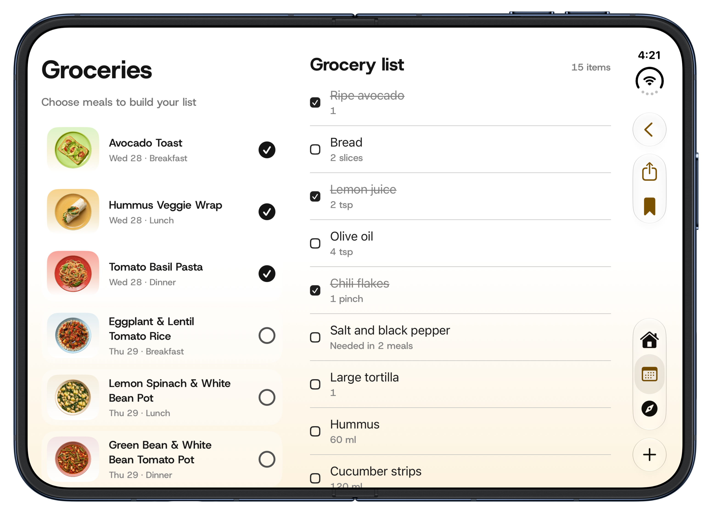
A recipe that opens up with you
I wanted the recipe page to share that feeling. On the cover display, the dish takes the lead and the details follow below. Open Duo and the photo sits alongside the title, cooking time, description and nutrition.
Below that, ingredients and steps sit side by side. It feels closer to how I want to read a recipe in the kitchen: see what I need and what to do with it, together.
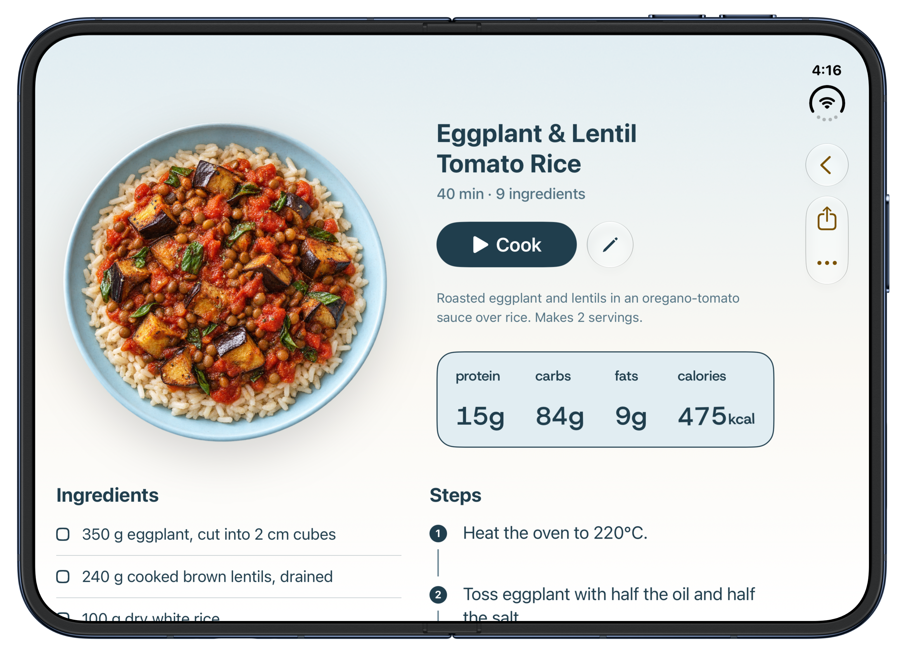
And then, just cook.
Of course, planning is only half the story. At some point, you’re standing in the kitchen with pasta on the stove.
Cook Mode keeps the current step large and clear, with voice controls for cooking hands-free. I wanted it to feel comfortable across the different ways you might hold or position Duo. The device is interesting; dinner still needs to happen.

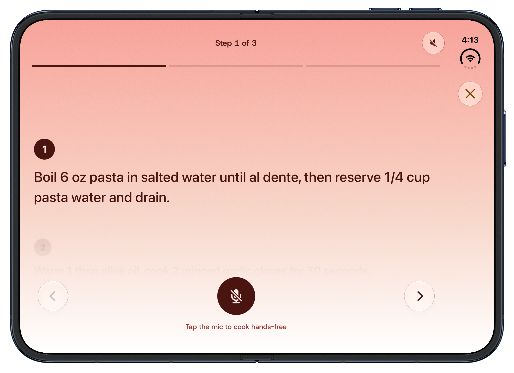

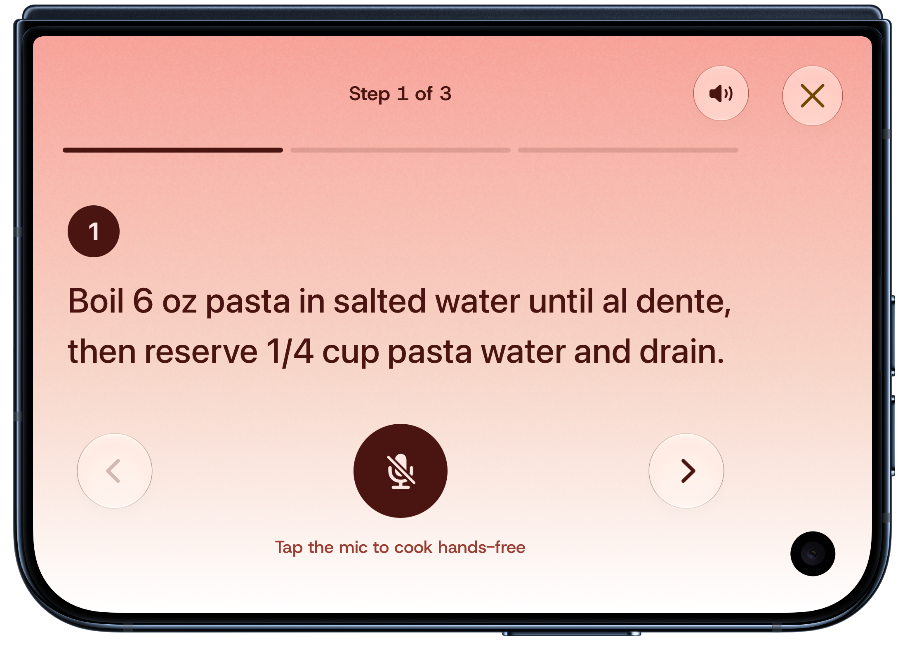
The parts of Ryce I already love
I also wanted to keep the joy of browsing. The colourful packs, the plates of food, the feeling of finding something you want to make—those are a big part of why I enjoy working on Ryce.
On the open screen, the packs sit beside each other like a small collection. Turn the device and the recipe grid adapts. Navigation and actions use the system’s placement as the layout changes, so the food can stay at the centre.
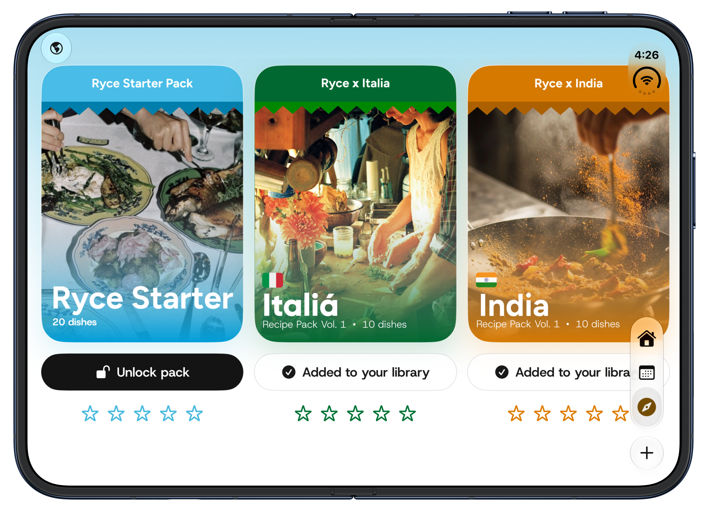

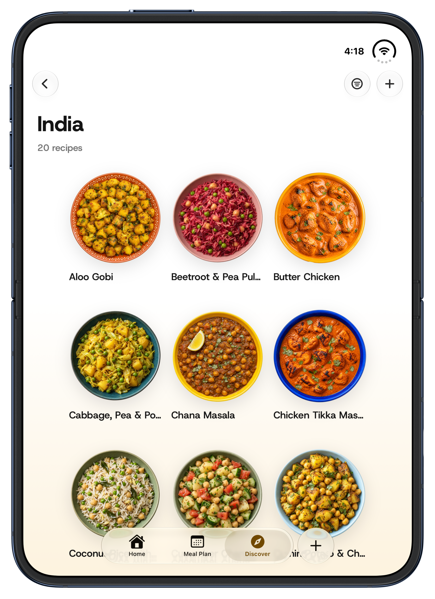

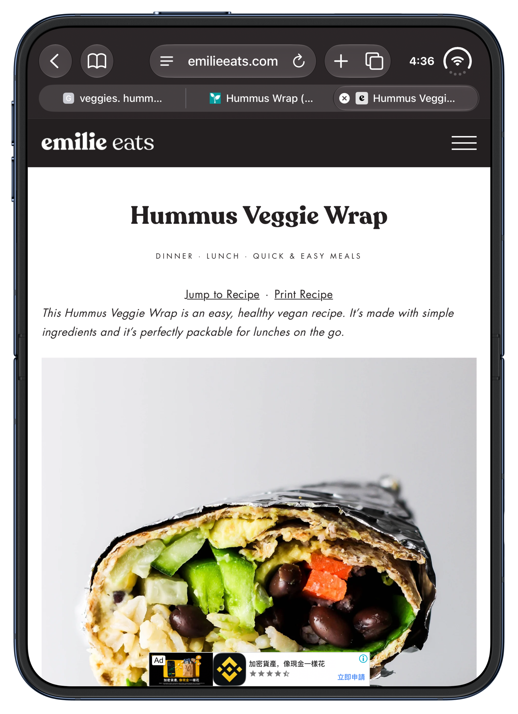
And the starting point is still the same. A recipe you come across online, something that makes you hungry, a link you want to keep. I love that something so ordinary can end up in a meal plan that feels made for a completely new kind of phone.
I needed this spark.
Working on an app for a long time means spending a lot of days on small details. Those details matter to me. But I also missed the rush of looking at something and immediately imagining what I could make.
iPhone Duo gave me that again.
I saw it and thought about Sunday planning with my wife. About moving a recipe into Thursday’s lunch. About picking meals and seeing our shopping list beside them. Suddenly I had a whole set of ideas I couldn’t wait to build.
That’s what adapting Ryce for Duo has felt like to me: a new reason to be curious about an app that is already so personal.
— Raghav